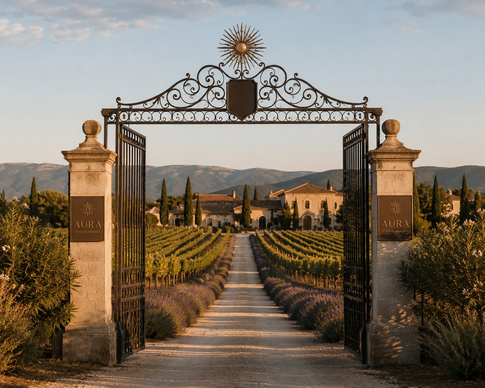
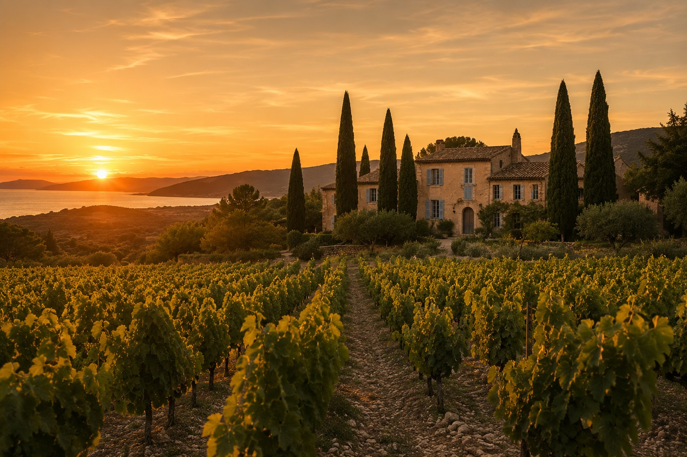

The Estate
Nestled between sea and hills, a terroir that is never rushed — a bastide, vineyards, and all the time it takes.

Limestone soil, a sea breeze.
Clay-limestone on the surface, well-drained below — the estate's soil sets its own limits. The nearby sea tempers the summers, and the surrounding scrubland lends a subtle salinity that runs, like a thread, through each of the three cuvées.
The art of the vine, without haste.
Hand-picked harvests, deliberately limited yields, plot-by-plot vinification — every gesture on the estate answers one question: what would we do if we weren't in a hurry?



Three cuvées, one same light.
Plaisir, Gastronomie, Exception — each carries, in its own way, the estate's demand for excellence.
Discover the Wines